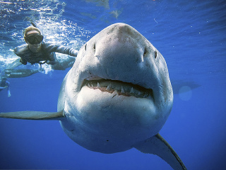
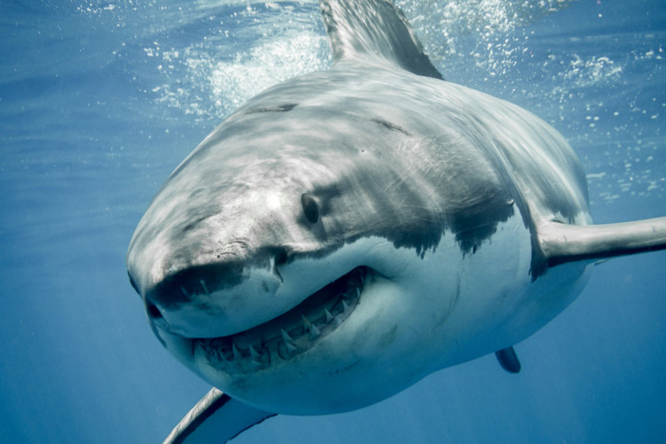

Žralok modrý (iné názvy: žralok belasý, lamna veľká, lamna ľudožravá, nevhodne žralok biely, staršie alebo ľudovo: žralok ľudožravý, staršie: žralok-ľudožrút, ľudovo ľudožrút, ľudovo biely žralok alebo veľký biely žralok [čo je doslovný preklad anglického mena] ; lat. Carcharodon carcharias) je veľký žralok z čeľade lamnovité (Lamnidae) vyskytujúci sa v pobrežných vodách. Žralok modrý patrí medzi paryby, a to znamená, že základ jeho endoskeletu tvorí chrupka. Je považovaný za človeku najnebezpečnejšieho žraloka a ako taký bol dlhodobo systematicky hubený námorníkmi a rybármi. Jeho prenasledovanie ešte zosilnelo po uvedení úspešného filmu Čeľuste, takže v súčasnosti čelí bezprostrednej hrozbe vyhubenia. Vo viacerých štátoch sveta je zákonom chránený (napr. Juhoafrická republika) a jeho lov je v tamojších vodách zakázaný. V skutočnosti tieto žraloky človeka systematicky nelovia. K útokom v jeho prirodzenom prostredí dochádza predovšetkým v dôsledku zámeny siluety vo vode vznášajúceho sa človeka so siluetou plutvonožcov, ktoré tvoria hlavnú zložku jeho potravy. Žralok modrý v recente predstavuje vrchol potravného reťazca v svetových oceánoch.
 